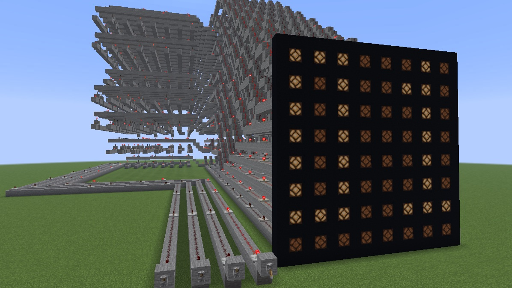
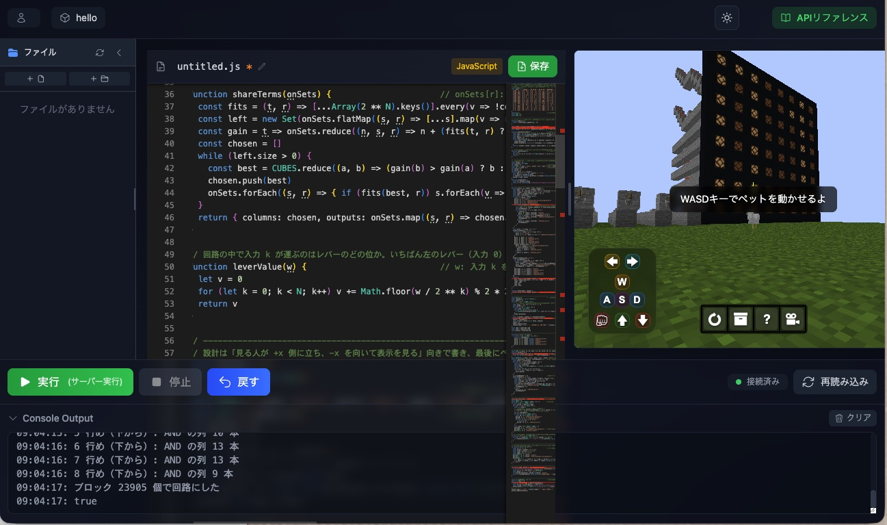

よりみち ／ 半導体を学ぼう
トーチ1本から、
半導体チップへ。
マインクラフトのレッドストーントーチは、トランジスタと同じ働きをする部品です。
初級は、電気の道からはじめて NOT・AND・XOR、そして2ビットの足し算機まで、子ども自身の手で組み上げます。
中級は、JavaScript で回路をプログラムから生成し、CPUまで組み上げます。
WHY 8x9 TOKYO
ほかの教室がやらないことを、やる。
スマホもゲーム機もAIも、中身をたどれば何十億個ものトランジスタが「ON / OFF」を切り替えているだけ。
けれど、その一番奥のしくみを子どもが自分の手で確かめられる場所は、ほとんどありません。
8x9東京は、マイクラを「楽しく遊ぶための入口」で終わらせません。
大好きなゲームの中で、コンピュータが動く理由そのものにたどり着く。
「使う側」から「しくみを知って、作れる側」へ。そのために、教材もツールも自分たちで作っています。
このカリキュラムは、オンライン居場所Colorさんとのワークショップでの関わりをきっかけに生まれました。
Colorさんの Python クラスで取り組まれていた「子どもたちと半導体のしくみを学ぶ」活動と、その中で生まれた7セグメント表示の回路から着想をいただき、
8x9東京で、より多くの子どもが順を追って学べるよう、チュートリアルとステップを組み直してカリキュラムにしました。
本物の原理
ゲームの「ごっこ」ではなく、論理回路の教科書と同じ原理。トーチ1つで NOT、3つで AND。半導体チップと同じ組み立て方です。
自分で組む
お手本を写すのではなく、問題文と合格条件だけを見て自分で設計。中級では、同じ部品をプログラムでいくつも並べ、手では置ききれない大きさの回路に挑みます。
独自開発の環境
回路の正しさを自動で検査するプラグインを自社開発。現役エンジニアが作った「本気の実験室」で学びます。
TORCH = TRANSISTOR
レバーを動かして、確かめてみよう。
レッドストーントーチは「くっついたブロックに電気が来ると消える」部品。
これが NOT（ぎゃく）。組み合わせると、どんな計算もできる回路になります。
はんぶん たしざん（半加算器）
0 + 0 = 00 （2進数）
S（こたえ）は XOR、C（くりあがり）は AND。
1 + 1 = 10 —— 回路で足し算ができた瞬間です。
CURRICULUM 1 ／ 初級
マイクラで半導体を作ろう
— 22ステップで、足し算機まで。
レッドストーンを手で置いて、回路を組み上げます。難しい問題の前には、その部品になる技能が必ず先に出てきます。
XORで手が止まる子が多かったから「線を分ける・交差させる・トーチの置き方」を独立したステップにしました。
XORのあとは、同じ回路を少ないトーチで組み直す「しょうりゃく」で、設計の工夫を学びます。
電気とトランジスタ
ステップ 1〜6- 01でんきを とおせ基礎
レッドストーンは電気の道
- 03ぎゃくに しろ — NOTゲート
トーチ = トランジスタ
配線とゲート
ステップ 7〜12- 07いれかえろ — 線の交差配線
混ざらずに越える「橋」をかける
- 10りょうほうで つく — ANDゲート
トーチ3つで1つのゲート。CPUの中も同じ
- 12どちらか だけ — XOR合成
分岐・交差・AND・NANDを全部使う前半の山場
しょうりゃく — 回路を小さくする
ステップ 13〜16- 13–16NOR・NAND・AND・XOR を少ないトーチで設計
同じ動きを、もっと少ない部品で。本物のチップ設計でも大事な考え方
計算・記憶・時計・選択
ステップ 17〜20- 17はんぶん たしざん — 半加算器計算
1 + 1 = 10。回路で足し算ができる最初の瞬間
- 18おぼえる — RSラッチ記憶
レバーを戻しても覚えている。メモリ1ビット
- 19とけい — クロック時間
ひとりでピカピカ。コンピュータの心臓の鼓動
- 20えらぶ — マルチプレクサ選択
信号を選んで通す、選択回路
チップをつくる
ステップ 21〜22- 21くりあがりを うけとれ — 全加算器計算
くりあがりを受け取って、何桁でも足せる部品へ
- 22はんどうたいチップ — 2ビット加算器チップ
ここまでの全部を組み合わせた、自分だけの半導体チップ
HOW IT WORKS ／ 初級の実験室
答えの「形」は見ない。
回路が正しく動くかだけを見る。
合否は真理値表で決まる
検査ボタンを押すと、プラグインがレバーを自動で動かし、入力の全パターンでランプを読み取ります。全部合えば合格。お手本と違う組み方でも正解になり、「ランプの横にトーチを立てて点けっぱなし」のようなごまかしは、入力が変わった瞬間に見抜かれます。
| A | B | Q |
|---|---|---|
| 0 | 0 | 0 |
| 0 | 1 | 1 |
| 1 | 0 | 1 |
| 1 | 1 | 0 |
1人1ワールド
参加すると、自動で自分専用の空中の広場へ。ほかの子に壊される心配も、真似で済ませることもできません。進み具合は一人ずつ保存され、次回は続きから。
つまずきを想定したヒント
30秒たつとヒントが自動で表示。講師は「どこが OR でどこが AND？」のように、答えではなく考え方を問いかけます。最後まで自分の力でたどり着くための設計です。
ルールはたった6つ
「ダストは電気の道。15マスで消える」「トーチは付けたブロックに電気が来ると消える」——初級の22ステップで使う規則はこれだけ。少ないルールの組み合わせで、複雑な回路が生まれることを体感します。
CURRICULUM 2 ／ 中級
半導体とコンピュータ
— JavaScript で、CPU まで。
初級で手で組んだ回路を、今度は hackCraft2 で JavaScript のプログラムから建てます。
本線20回で、NOT から足し算機、ALU とレジスタ、そして自分で設計した CPUにプログラムを読ませて動かすところまで。
本線の途中には、興味に合わせて深掘りできる8本の「枝」があります。
プログラムで置く
第1〜4回- 01半導体ってなに？はじまり
プログラムで NOT を置いてみる
- 04部品に名前を付ける関数
関数で「セル」をつくり、何度でも置ける部品に
ゲートから足し算機へ
第5〜10回- 06XOR を組み立てる論理
論理と真理値表
- 094ビット加算器計算
同じ部品をならべてつなぐ
計算して、覚える
第11〜16回- 11真理値表から回路を作る設計
表を書きかえるだけで、ちがう回路ができる
- 12ALU計算
選んで計算する。引き算は2の補数で
- 144ビットのレジスタ記憶
覚える部品と、1歩ずつ動かすクロック
CPU をつくる
第17〜20回- 17プログラムカウンタと命令のメモリCPU
命令を順番に読み、読み解く回路
- 19CPU を組み立てるCPU
読む・読み解く・実行する。約1万9千ブロックの回路
- 20自分のプログラムを動かす発表
自分の CPU に命令を入れて動かし、発表する
枝 — 興味に合わせて深掘り
枝1〜8- 枝1・7回路を小さくする最適化
同じ論理を、少ないトーチで。項をまとめる
- 枝2・3配線の層と、信号の遅れ配線
線をまたぐ、速くする
- 枝48ビット・16ビットにする規模
手では作れない大きさへ
- 枝5・67セグ表示器表示
表示器のプログラムを読み解き、自分の字を出す
- 枝8論理合成設計
作りたい動きを書くと、回路ができる


// 1文字 = 1ブロック。W=ダスト C=コンクリート G=リピーター
const cellKey = { A: AIR, C: CONCRETE, W: RS_WIRE, G: RS_REPEATER_E, ... }
const or4_0 = [
[ "CCCCCAAA", // 1段目
"AACCCAAA" ],
[ "WWWCWAAA", // 2段目
"AAWWWAAA" ],
...
]BEYOND THE LAB
マイクラの回路は、本物の半導体につながっている。
レッドストーンラボはゴールではなく入口です。
8x9東京では、マイクラの中で「回路を手で組む」から「回路をプログラムで生成する」までに取り組みます。
その先には、実際の半導体設計の世界が続いています。
8x9東京で取り組むことマイクラの中で、回路を組む・つくる
- 1マイクラで論理回路
初級の22ステップ。トーチ = トランジスタで NOT から加算器まで、手で組み上げる。
- 2プログラムで回路を生成
中級の28ステップ。hackCraft2 で JavaScript を使い、回路をコードから建てて CPU まで。手では置ききれない規模へ。
この先にある世界大学や開発の現場で行われている、半導体設計の流れ
- 3ハードウェア記述言語
Verilog などで回路の「動き」をコードとして書き、ツールが論理回路に変換（論理合成）する。
- 4シミュレーション
波形を見ながら、書いた回路が正しく動くか検証する。
- 5レイアウト
設計ツールと PDK（製造ルール集）で、チップ上の配置・配線を決める。
- 6製造と動作確認
工場でチップをつくり、基板に載せて動かす。複数の設計を1枚のウェハに相乗りさせる仕組みもある。
※ 3〜6は8x9東京のカリキュラムには含まれません。マイクラで身につけた考え方が、本物の半導体設計のどこにつながっているかを示すためのものです。
マイクラで身につけたことは、本物の設計のここにつながる
| マイクラで取り組むこと | 本物の半導体設計では |
|---|---|
| トーチ1つで NOT、3つで AND初級 ステップ3・10 | トランジスタを組み合わせて論理ゲートをつくる |
| 入力の全パターンで回路を自動検査初級の検査ボタン | テストベンチ（検査用プログラム）による検証 |
| RSラッチで1ビットを覚え、レジスタにする初級 ステップ18 ／ 中級 第14回 | フリップフロップ・メモリ |
| リピーターの遅れと、ピカピカ光るクロック初級 ステップ2・19 ／ 中級 枝3 | 信号が伝わる遅れ（伝搬遅延）と、クロックにあわせて動く回路 |
| 全加算器を組み合わせて2ビット・4ビット加算器に初級 ステップ21・22 ／ 中級 第9回 | 小さな部品を組み合わせて大きな回路にする階層設計 |
| 回路の部品をコードで定義し、プログラムで建てる中級 第4回 | Chisel や Amaranth（Python）のように、プログラムで回路を生成する設計言語 |
| 作りたい動きを書くと、回路ができる中級 第11回・枝8 | 論理合成（ツールが動きの記述から論理回路をつくる） |
| プログラムカウンタ・デコーダ・ALUをつないで CPU に中級 第17〜19回 | CPU の設計（命令を読む・読み解く・実行するしくみ） |
まだ大きな一歩が残っているところ中級の枝8では「動きを書くと回路ができる」論理合成を体験しますが、本物の設計では、そこから先の部品の配置や配線まで設計ツールが自動で行います。マイクラ特有のしくみ（ゲーム内の時間の単位など）も持ち越せません。この「動きを書いて、形はすべてツールにまかせる」への切り替えが、マイクラの次に越える壁です。
FOR PARENTS
保護者の方へ
半導体なんて、子どもには難しくないですか？
初級の問題文はひらがな中心で、「レバーを いれたら ランプを けせ」のように短く書かれています。専門用語はあとから「これが NOT という名前」と教えるので、仕組みを先に体で覚え、言葉はあとからついてきます。
何が身につきますか？
コンピュータが動く原理（論理回路・2進数・メモリ・クロック）の理解に加え、「なぜ動かないのか」を自分で切り分けるデバッグの力。中級では、CPU が命令を読んで実行するしくみまで理解します。検査で落ちた理由を、正解と実際の値から考える習慣が育ちます。
どのコースで受けられますか？
マイクラAIコースの第2章「マイクラのAIワールドで学ぶ」（5〜8か月）の中で、「よりみち」として取り組みます（PC・教材込み、追加料金なし）。AIやコーディングの本線からいったん寄り道して、コンピュータの中身をのぞきに行く時間です。まずは無料体験レッスンで、教室の雰囲気をご覧ください。